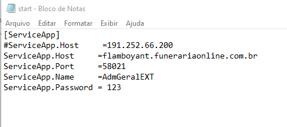

Instalação sistema – Máquina Local
-
Primeiro, você precisa dos arquivos do sistema Clique Aqui para fazer download.
-
Após realizar o download extraia o arquivo em sua máquina.
-
Coloque o arquivo, dentro C: do seu computador.
-
Confira se o arquivo start está com as configurações abaixo;

-
Coloque o ícone do sistema na área de trabalho e clique em cima;
-
Após seguir todas as etapas, a tela abaixo vai abrir, agora é só entrar no sistema com seu acesso.